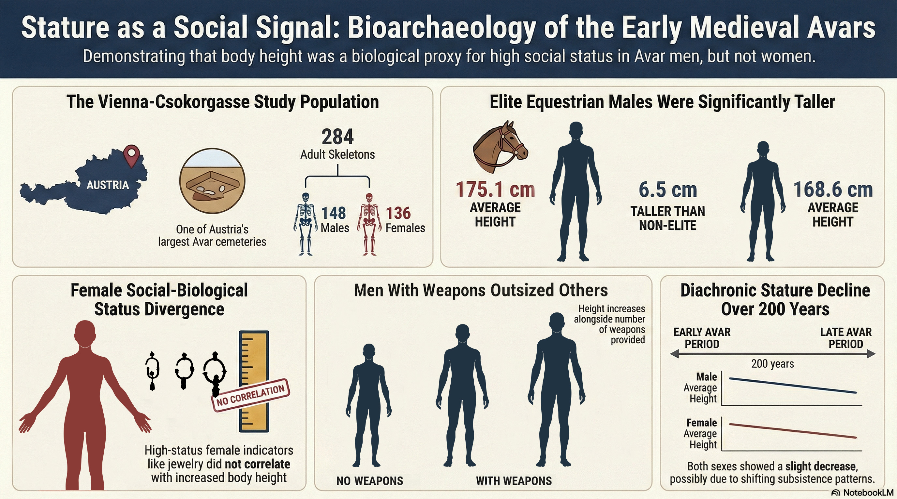

Stature as a Social Signal & Female Lifeworlds
Bioarchaeological investigation of 284 undisturbed adult burials (148 males, 136 females; from 348 anthropologically documented adults) demonstrated a pronounced sex-specific pattern: high-status equestrian males averaged 175.1 cm (+6.5 cm over low-status males), whereas female body height did not vary across grave-good status tiers, pointing to distinct female social mobility and living conditions.
Kirchengast, Bühler & Hagmann (2026)
Nature & Anthropology 4 (1): 10004 (Graph. Abstr.)
DOI: 10.70322/natanthropol.2026.10004 ↗